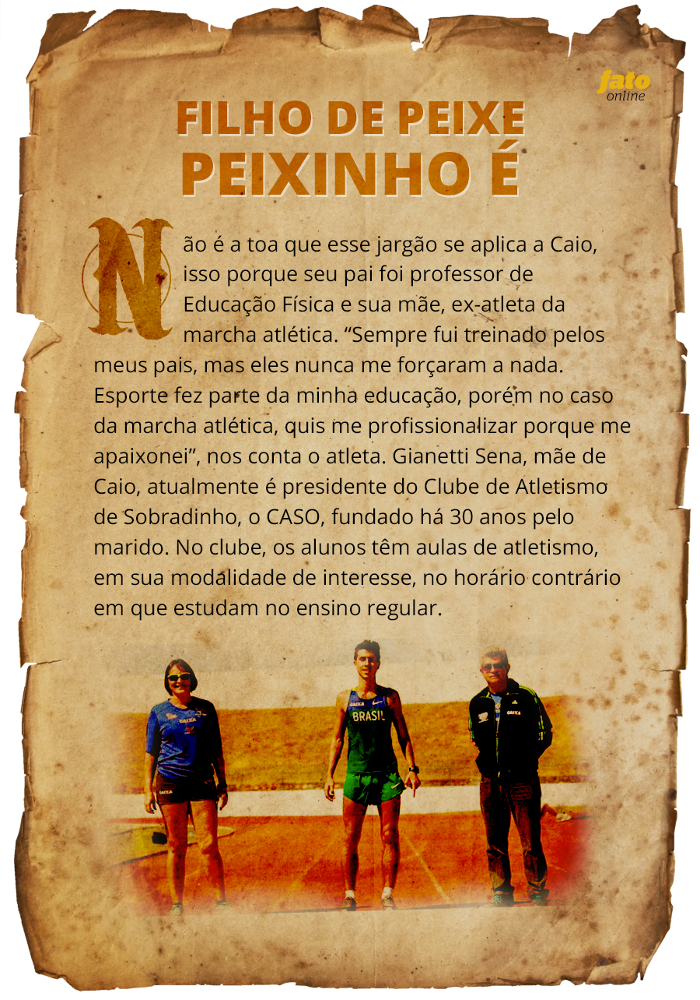
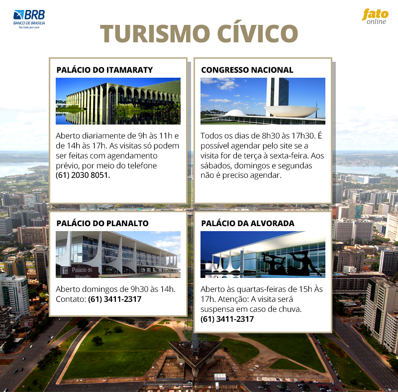

Vire o seu celular ou tablet para melhor experiência
Vire o seu celular ou tablet para melhor experiência

Pensando e colocando em prática esse conceito de startup, alunos e professores da Universidade de Brasília dispostos a fazerem um futuro melhor para a nova geração que vive conectada, criaram o Carona Phone, um aplicativo para smartphones que facilita o encontro entre quem precisa e quem oferece transporte. O aplicativo foi lançado no dia 29 de março e até o momento já teve mais de 4 mil downloads.
Depois de economizar combustível, pensar no meio ambiente, que tal praticar exercício e ainda ganhar pontos para trocar por passagens aéreas ou outros mimos oferecidos por programas de milhagem? Os criadores do Mova Mais pensaram nisto e há um ano lançaram o aplicativo que tem o objetivo de incentivar as pessoas a praticarem exercício ao ar livre. Depois dessa ideia deu até vontade de dar uma corridinha, mas antes disso irei terminar de escrever o texto para vocês.
Embora Brasília seja um novo berço de incubadoras, onde as pequenas empresas buscam apoio com alguma diretiva governamental ou regional,há grande dificuldade em realizar algumas ideias. De acordo com o professor de Engenharia Civil da Universidade de Brasília, Pastor Willy Gonzales Taco, embora tenha melhorado o apoio financeiro, ainda é preciso mudar a cultura das pessoas.'' As pessoas precisam acreditar que podem opinar e participar de projetos. Normalmente as pessoas mais simples acham que as ideias virão de doutores, mestres. Essa cultura precisa ser mudada'', afirma o professor.
Com dificuldades, mas já se destacando, Brasília entra no eixo das cidades modernas que tem uma economia colaborativa, através das startups, um futuro próximo muito promissor.

A Ampare atende 120 famílias em sua sede localizada na 709 norte, a maioria delas possui baixa renda. Ali as pessoas com deficiência recebem atendimento especializado e adequado às necessidades individuais, objetivando a independência e – Estimulação Precoce – a partir do nascimento a inclusão na sociedade.
Em 1994, Gláucia e Clayton Aguiar adotaram 14 crianças que foram abandonadas em diversos hospitais de Brasília em razão de possuírem graves deficiências múltiplas. Eles criaram a Casa Lar Ampare que está localizada na Vila Planalto. Hoje, a casa abriga 10 pessoas com idade entre 10 e 28 anos, que chegaram ali ainda bebês. São pessoas extremamente dependentes com deficiência intelectual e múltipla, com pouca expectativa de vida, e que recebem atendimento digno e inclusão social.
Em 2015, após a morte da fundadora da Casa Lar, Gláucia Aguiar, a coordenação geral da entidade ficou sob a responsabilidade da sua irmã, Mirna de Oliveira Bueno. A família de Gláucia permanece dando continuidade ao seu trabalho que por várias décadas fez a diferença na vida de muitas pessoas transformando o mundo em um lugar melhor.
Como colaborar com a Ampare:
Banco do Brasil – BB
Agência: 1003-0
Conta corrente: 250.085-X
Poupança (op. 051): 250.085-X
Banco de Brasília – BRB
Agência: 209
Conta Corrente: 600.469-6
Banco da Caixa
Agência: 0007
Conta Corrente (op.003): 1974-0
Fernanda Mendez, 34 anos, assistente de seguros, sempre gostou de ajudar os animais, só na casa dela são 46 animais resgatados (15 cães, 28 gatos, uma égua e 2 bezerros). Entre tantas fofuras a que se destaca é a linda cadelinha Bibi, que foi resgatada pela assistente de seguros em dezembro de 2014. Quem olha assim nem imagina o quanto ela sofreu quando ainda era filhote. Fernanda encontrou Bibi em Sobradinho I com forte anemia, espancada e com muitos carrapatos.

Atualmente as medidas adotadas pelo GDF em relação aos animais são feitas com o acolhimento do animal com um laudo prévio indicando problemas de zoonose. Eles são tratados e alimentados e posteriormente colocados para a adoção. “Nosso apelo com público é que já tenha um tratamento humanizado com esses animais, independente de terem sidos adotados ou nao”, afirma o Diretor de Vigilância Ambiental em Saúde, Divino Martins.
Existe uma proposta de projeto lei para tramitar na Câmara Federal para implantar um acolhimento mais humanizado para esses animais. “Temos o total interesse de que isso seja definido porque a partir disso serão estabelecidas rubricas, orçamentos e recursos financeiros para efetivar o trabalho na prática”, explica o diretor.
Em quatro meses o ANIMAIS já arrecadou R$ 20 mil reais para o processo de sua constituição legal tais como: registro de documentos em cartório de títulos, publicação do estatuto no Diário Oficial da União. Atualmente a etapa mais importante do processo de criação do partido está em execução, é a coleta, o processamento e a certificação de cerca de meio milhão de assinaturas de apoio à criação do ANIMAIS em cartórios eleitorais de todo o país.
Ronald Rudson de apenas 24 anos é a grande promessa do basquete de Brasília. Ele tem se destacado como pivô do time do UniceuB-BRB e desperta os olhares de vários treinadores do Brasil. Este ano o atleta representou o país pela primeira vez jogando pelo Novo Basquete Brasil (NBB) no Jogo das Estrelas. No total são doze jogadores na NBB Brasil disputando com a NBB Mundo, e quatro de Brasília estão nesse time sendo Derik, Fúlvio, Giovannoni e Ronald.
Ainda não saiu um convite oficial para Ronald compor os times americanos, como NBA, ou da Europa, mas tudo leva a crer que isto não levará muito tempo, já que o jogador tem sido muito citado pelos técnicos brasileiros por conta da atuação excepcional em quadra. “É meu sonho jogar em grandes times da Europa ou NBA. Nos finais das temporadas sempre chegam os convites para jogar em outros times do Brasil, mas quero renovar contrato com o meu time e trazer mais títulos para nossa capital”, conta.
Com 2,11cm de altura, Ronald é o mais alto do time, sim gente, 2,11cm. Escrevi de novo para vocês não acharem que leram errado. Mas o que ele tem de tamanho, tem de simpatia. Eu tive que me esforçar para fazer a entrevista com ele, e olha que sou alta!!! Confira mais sobre o GRANDE atleta.
Caio Sena, brasiliense, 23 anos, atleta da marcha atlética está na Espanha treinando para competir na Copa do Mundo de Marcha Atlética 2016, que acontecerá na Itália em maio. Ele vem se destacando cada vez mais na modalidade na qual ficou em terceiro lugar em seu primeiro teste para a Copa Brasil, na época aos 16 anos.
A rotina de treinos é de segunda à sexta, para os iniciantes, e até os sábados para atletas mais avançados. Os alunos têm aulas com professores voluntários e o critério para participar do clube é ter vontade de praticar esporte. “Vamos atrás de crianças que queiram participar, fazendo eventos em escolas. Os que se destacam, convidamos para o CASO. Mas isso não é critério para entrar no clube, basta apenas querer treinar”, conta Gianetti.
Quando foi atleta a mãe de Caio teve que sair de Brasília porque a marcha atlética na cidade não era muito conhecida. Para poder competir, mudou para São Paulo e disputou títulos pelo estado. Hoje essa condição é totalmente diferente para Caio, que disputa por Brasília e continua morando na cidade. Isso tudo graças ao apoio da Secretaria de Esportes do DF e de patrocinadores.
Clique aqui e saiba sobre o que a nossa Secretária do Esporte, Leila Barros, nos contou sobre as atuais políticas públicas para o esporte na nossa cidade.
Lembra do Projeto de Lei, o Programa Rua do Lazer, falado aqui há algum tempinho atrás? Agora é lei e já entrará em prática no próximo mês. A primeira cidade a receber o programa será surpresa, disse a Secretária de Esporte e Lazer do DF, Leila Barros: "não posso dizer qual a cidade ainda, mas posso garantir que será em maio". O Projeto foi idealizado pelo deputado distrital, Professor Israel, que pretende fechar partes das ruas nas regiões administrativas para o esporte e lazer aos domingos, como já acontece nos eixos norte e sul de Brasília.
O que se espera desse projeto, de acordo com Leila, é que as pessoas voltem a ter o lazer e o esporte em sua própria comunidade, que resgatem as brincadeiras de infância, de rua, e que assim as pessoas tenham mais qualidade de vida e mais proximidade.
Além disso, as obras no Centro Administrativo Vivencial e Esporte, o CAVE, situado no Guará, estão a todo vapor. As instalações temporárias dão prioridade a reforma do gramado e dos vestiários para os atletas que participarão das Olimpíadas. O investimento é de 1 milhão de reais do Ministério do Esporte.
Atualmente a Secretaria de Esporte e Lazer tem três programas para atletas da cidade, sendo eles, o Compete, que é a ajuda no custo de passagens aéreas e terrestres nacionais e/ou internacionais, para atletas iniciantes ou avançados. O Bolsa Atleta é a ajuda financeira para seis diferentes categorias de atleta de alto rendimento, para que ele possa se dedicar exclusivamente ao esporte. E o Apoio a Eventos que acontece em corrida de atletas, ciclismo, futebol, dispondo alambrados e o suporte físico na área utilizada.
Quem pratica qualquer modalidade nos Centros Olímpicos (CO) da cidade pode ser chamado pelo Programa Futuro Campeão, que faz parte do próprio CO, que funciona da seguinte maneira: o atleta que tem potencial começa a ser trabalhado com foco profissional. O programa atende tanto atletas olímpicos como os paraolímpicos.
O Distrito Federal tem muito potencial esportivo atualmente e para o futuro. “No passado e no presente temos atletas de destaque da cidade, que percorreram e percorrem mundo a fora. Meu sonho é possibilitar que todos que desejam, independente da classe social, possam garantir seu espaço no esporte profissional, porque muda totalmente o destino de uma família. Foi assim comigo e hoje isso é a minha missão”, finaliza Leila Barros, de forma emocionada.
Pedir comida, comprar presentes, roupas, mandar flores, pagar contas e muito mais você consegue pela internet. Com tantas utilidades fica até difícil fazer uma previsão do que poderemos ter de avanço nos próximos anos.
Aproveitando a modernidade e facilidade que se é possível para adquirir e transmitir conteúdo, Ailton Zouk, delegado da Polícia Civil de Brasília, se transformou em uma personalidade conhecida nas redes sociais. Isso porque, há cinco anos Ailton criou o grupo Adelante Carreiras Policiais para ministrar aulas online sobre dicas, assuntos e informativos judiciais que são conteúdos necessários atualmente em concursos.
E ele não esquece do lado emocional do aluno já que sua experiência de vida mostrou a importância do desempenho motivacional.
Imagine que atos como o do delegado Ailton podem aumentar bastante, isso porque a tecnologia será mais avançada, segundo Paulo Rogério Foina, coordenador do curso de Ciência da Computação do UniceuB. “Nossa cidade nasceu com tudo voltado para o futuro, desde o projeto à fundação da capital.
Hoje temos o terceiro maior mercado TI do Brasil”. Isso se dá, de acordo com Foina, pelo fato da cidade ter uma densidade de doutores na área altamente qualificados. De forma cooperativa para esse progresso, o cientista trabalha no Instituto Illuminante, sem fins lucrativos, a fim de inserir uma visão crítica na sociedade e assim solucionar problemas sociais de forma simples.
Nobu Kahi, 29 anos, é ator de Brasília e começou a colocar seus trabalhos nas redes sociais quando os altos custos das pautas de teatro começaram a limitar seu espaço. O ator não ficou parado e criou um jeito de continuar em cena. Hoje Nobu Kahi tem vários seguidores nas redes sociais, conhecido por seus vídeos no youtube e Facebook, prestígio que o fez participar do programa Global Esquenta.
Ele explica que, como o público jovem não tem mais tanto interesse pela televisão, o mecanismo que mais tem dado certo para divulgação é a internet. “Hoje eu tenho muito orgulho de dizer que eu sou ator da internet. A galera de hoje em dia é a galera do click”, conta ele.
Para Nobu Kahi, os atores de Brasília ainda não usam a internet como um fim para os seus trabalhos, e sim como um meio somente de divulgação. Ele acredita no processo criativo que a internet tem proporcionado, “seria muito legal uma renovação estética nessa área”, completa. Dessa maneira Nobu Kahi incentiva seus colegas, já que a partir do seu trabalho outros profissionais foram copiando a ideia e também trabalhando em parceria.
Além das belas e renomadas obras de arte, a história encanta e surpreende. Todos os dias da semana é possível fazer visita guiada a pelo menos um dos palacetes projetados por Niemeyer.
Que tal começar pelo Palácio do Itamaraty? O prédio sedia o Ministério de Relações Exteriores e é um dos mais bonitos edifícios da Esplanada. Há quem diga que é o mais bonito. O local guarda muita história e obras de renomados artistas. É lá que as autoridades internacionais, chefes de Estado, presidentes e reis são recebidos com honras de Estado.
E que tal conhecer o lugar de onde as decisões e assinaturas mais importantes do país são feitas? É isso mesmo. É de onde a presidente da República despacha. No Palácio do Planalto é possível, inclusive, entrar no gabinete de Dilma Rousseff. Na galeria, toda história sobre a República e seus presidentes. A visita só é aberta ao público aos domingos.
Para quem quer conhecer o Congresso Nacional terá que esperar até o dia 17 de maio, pois as visitas estao suspensas. A medida foi adotada, segundo o diretor-adjunto da Secretaria de Polícia Legislativa do Senado, Alex Nobre, para garantir a segurança durante as discussões e votações da admissibilidade do pedido de impeachment da presidente Dilma Rousseff no Senado Federal e as prováveis manifestações em frente ao Congresso, que devem reunir um grande número de pessoas.
O programa de visita guiada do Congresso é oferecido diariamente. Primeiro grupo guiado sai às 9h. Só no último ano 135 mil pessoas fizeram essa visitação.
Entre as lembranças, o maior símbolo guardado pelo memorial é o próprio corpo do ex presidente. A Câmara Mortuária, iluminada por luz natural que entra pelo vitral de Marianne Peretti, guarda o túmulo que flutua com os restos mortais dele. Um recinto para oração e culto à importância que JK teve para os brasileiros.
O Memorial JK abre de terça a domingo, de 9h às 18h. O valor do ingresso custa R$5 para estudantes e idosos e R$10 para os demais visitantes. O espaço tem boa acessibilidade, conta com rampa de acesso, banheiros adaptados e um elevador interno para o 2° piso. Fotos só são permitidas sem uso do flash.
Ao lado, outro prédio projetado por Niemeyer. O Memorial dos Povos Indígenas conta a história e expõe objetos indígenas. Em forma de espiral, o prédio possui 2.984,8 metros quadrados de área construída.
Tombado pelo Instituto do Patrimônio Histórico e Artístico Nacional em 2007, o o museu fica aberto de terça-feira à domingo, das 9h às 18 horas e a entrada é franca.
A Catedral Metropolitana Nossa Senhora Aparecida, mais conhecida como ‘Catedral’, também de Niemeyer, foi o primeiro monumento construído em Brasília. A igreja é cartão postal e fica no coração da esplanada.
Além de lindas esculturas, quadros e muita história, a igreja tem uma curiosidade. Seu formato redondo por dentro tem ângulo perfeito para uma brincadeira que não tem idade. É possível ouvir, como se estivesse falando ao pé do ouvido, alguém que está do outro lado da igreja. O som escorregando rápido nas pedras aboladas do salão são pura física, mas divertem os visitantes.
A Catedral realiza missas de terça à sexta-feira, às 12h15, sábado às 17h e domingo, às 8h30, 10h30 e 18h. No mesmo dia, a igreja realiza culto em inglês às 12h. As confissões ocorrem de terça à sexta-feira das 11h30 às 12h15. A entrada é franca e abre às segundas-feiras de 8 às 16h30, terça e sexta das 10h30 às 18h e quarta, quinta, sábado e domingo das 08h às 18hs.
Em frente à Catedral está o Museu Nacional, parte integrante do Conjunto Cultural da República, construído para integrar o Setor Cultural Sul da Capital Federal.
Em formato semi-esférico e estrutura em concreto, o Museu que tem15.000 metros quadrados com interior dividido em quatro pavimentos é utilizado para exposições itinerantes, palestras, mostra de filmes, seminários e eventos em geral. O Museu Nacional abre de terça à domingo, das 9h às 18h30.
Na Praça dos Três Poderes, o Panteão da Pátria possui exposição inteiramente dedicada a Tancredo Neves, eleito presidente do Brasil em 1985 e também à heróis da pátria. Mais um projeto de Oscar Niemeyer, o monumento tem formato de pomba e possui acervo de artistas como Athos Bulcão e João Câmara. O local é aberto a visitas de terça a domingo, das 9h às 18h.
Em países de primeiro mundo já é comum ir para o trabalho de bicicleta, viajar, ir à encontros, entre outras atividades. Será que nós estamos nesse mesmo caminho?
Milton Cardoso, analista de sistema organizacional, acredita que o futuro de Brasília é apostar no uso da bicicleta. “É impressionante a diferença em vir para o trabalho de bicicleta e de carro. Com a bike eu faço em menos tempo, não pego engarrafamento e aproveito para fazer uma atividade física”, explica o analista que mora à 20km de distância do trabalho.
O interesse em ir para o trabalho de bicicleta não surgiu do nada. Há quatro meses, Milton comprou a bicicleta e começou a praticar para melhorar a qualidade de vida. No próprio trabalho, apreciadores do lazer se juntaram e formaram um grupo de montain bikers (MTB) para explorar aos finais de semana, alguns pontos da capital.
Márcio Bittencourt, coordenador do grupo de mountain bikers, Rebas do Cerrado, explica que o boom no ciclismo surgiu em 2005, quando havia uma grande oferta de competições locais. A fim de ter uma vida mais saudável, novas amizades e qualidade de vida, ciclistas do DF/GO começaram a se organizar em grupos e a divulgar suas agendas de eventos, somando hoje mais de 30 grupos organizados no DF e cidades próximas.
“Temos aproximadamente 40 trilhas mapeadas em Brasília e no Entorno. São muitas as opções de locais para pedalar com diversos atrativos naturais. A cachoeira do Tororó, a Floresta Nacional de Brasília, o Parque Nacional de Brasília e as cachoeiras da região de Santo Antônio do Descoberto e Formosa são alguns dos exemplos”, conta Márcio.
Os grupos de MTB são formados por pessoas comuns interessadas no mesmo objetivo. A partir disso, outros vão chegando e agregando à equipe e assim por diante. Em Brasília há grupos para todos os gostos e com finalidades diversas.
Os brasilienses têm procurado cada vez mais os grupos MTB buscando uma melhor segurança social, além de aumentar o número de trilhas conforme a troca de experiências entre os membros. Com certeza torna um dia muito mais gostoso, praticando um passeio esportivo ao ar livre e com novas amizades!!
Legião Urbana, Capital Inicial, Paralamas, Raimundos, Móveis Coloniais de Acaju e tantas outras bandas famosas de rock fazem sucesso por onde passam, e todas saíram de Brasília para buscarem melhores condições de trabalho em outras capitais como São Paulo e Rio de Janeiro. Mas o que vem chamando a atenção de quem faz eventos em Brasília, é que muitos músicos de fora, como os baianos, têm invadido a capital federal.
Um novo projeto será realizado em Brasília a partir de junho, é a Terça de Benção, uma realização do baiano, Waltinho Cruz, percussionista da banda Chiclete com Banana. Waltinho tem mais de 30 anos de experiência com percussão e resolveu agitar a capital federal com o axé da Bahia. Terça de Benção flutua entre todos os estilos com o carro chefe do grupo sendo o axé music com o forte som dos tambores.
A maioria dos músicos do projeto é baiana, são seis percussionistas, sendo cinco baianos. Para Waltinho, a relação de amor entre a Bahia e os brasilienses é antiga. “O brasiliense ama a Bahia, no carnaval, feriados ou em qualquer época do ano você sempre encontra algum turista do DF na Bahia. A oportunidade musical aqui é muito boa, as casas de shows sempre recebem muito bem os projetos baianos, e nosso projeto trará a Bahia até vocês, com rede, acarajé e muito axé (energia)”, fala com empolgação o baiano, que segue tocando no Chiclete com Banana, mas também viu a oportunidade em Brasília. O músico ressalta que as pessoas gostam do rock, do sertanejo. “ As pessoas gostam do que é feito atualmente aqui (rock, sertanejo), mas pelo que temos percebido as pessoas estão voltando a consumir a axé music na capital”, conclui Waltinho.
Outro baiano que também vive em Brasília é o cantor Durval Lelys,além da esposa ser brasiliense, o casal também tem uma casa na capital.
Pedro Batista, produtor de eventos, sócio da empresa Influenza, conta que embora o sertanejo ainda seja muito forte no DF, o axé e a black music têm se destacado entre os eventos no DF. "Uma festa de black music que antes tinham 300 pessoas, hoje são 2.500 pelo menos, e no seguimento do axé a maioria das casas noturnas voltaram a ter uma noite exclusiva para quem curte o estilo, isto porque o público alternativo de Brasília é forte”.
Mas não são apenas músicos de fora que consideram Brasília uma ótima oportunidade para o axé. A banda Açaí com Guaraná, por exemplo, é uma banda brasiliense fundada em 2004 e desde o início se diferencia no mercado por preservar em sua identidade musical o axé de raiz. Em 2015, o Açaí gravou seu 1° EP autoral com os singles “Energia do Açaí”, “Caminho de flor”, “Pirata do amor”, “Vamos se namorar” e “Só quero você”, todas composições de Diogo Lopes, vocalista da banda. Para Diogo o segredo da banda é o amor. “Fazer por amor e com verdade, esse é um dos motivos da longevidade do Açaí com Guaraná, e é assim, com respeito ao público e aos seus ideais, que a banda segue o caminho”, afirma o músico.
Há pelo menos cinco anos Brasília deixou de ser apenas a capital do País onde abriga políticos de vários estados e a cidade do concurso público. Brasília se tornou uma região com grande poder na economia colaborativa. De acordo com estudo realizado pela Endeavor, Brasília foi eleita a quinta melhor cidade para empreender no Brasil: além de ter o terceiro maior PIB do país, a população local tem alto poder de compra e todos os processos analisados no ambiente regulatório são efetuados em prazos inferiores à média nacional.
Salvar vidas, ajudar a melhorar o cotidiano urbano e influenciar positivamente a cidade, não seriam características de um herói? Nas linhas retas de Brasília nem sempre tudo ocorre de forma planejada e pessoas comuns tomam a iniciativa de fazer diferente, resgatando vidas e ajudando pessoas. Conheça histórias de pessoas que se tornaram os verdadeiros heróis do cotidiano.
Brasília tem potencial para ser também a capital do esporte. Muitos talentos já saíram daqui e a cidade continua produzindo atletas. Saiba quais são as promessas do esporte que já estão se preparando para levar o nome do Brasil, de Brasília para o mundo.
Inspiradores, divertidos , motivadores essas são as qualidades chaves dos nossos personagens urbanos . Eles trazem a experiência de investir em novas profissões ou fazer de forma diferente o que já vem sendo feito, mas o que eles tem em comum é a vontade de fazer dar certo e motivar pessoas.
Tradição e inovação, andar por Brasília são notórias estas características que nos levam a seguinte reflexão: quais são as apostas do futuro para aquecer o turismo e o lazer da capital? Muitos acreditam na melhoria do cívico outros já acreditam na promoção do lazer, porém qualquer que seja a aposta, o DF se mostra como um lugar de inúmeras possibilidades de interação entre a arquitetura e a natureza.
Como toda jovem, Brasília é ávida por cultura. tanto, que daqui já saíram vários artistas que ganharam não só o Brasil mas o mundo. O cenário musical sempre foi o charme da cidade, tanto que já fomos reconhecidos por ter uma produção musical forte e publico cativo. Brasília em sua história já foi a Capital do Rock, a explosão do Sertanejo e agora, qual será a próxima tendência?
Halline Medeiros
Naiane Carvalho, Leiliane Rebouças e Loraine Ferreira
Alexandre Fonseca
Vinícius Miranda
Alexandre Fonseca e Fabrício Assis